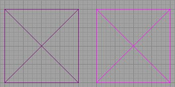
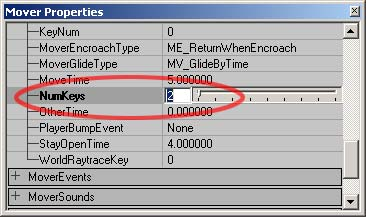
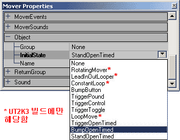
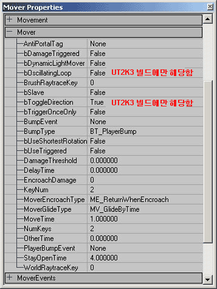
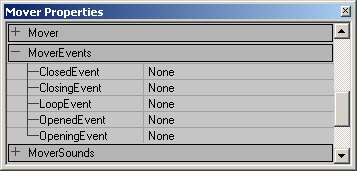
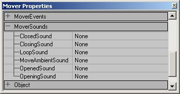
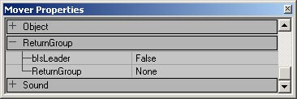

UDN
Search public documentation:
MoversTutorialKR
English Translation
日本語訳
Interested in the Unreal Engine?
Visit the Unreal Technology site.
Looking for jobs and company info?
Check out the Epic games site.
Questions about support via UDN?
Contact the UDN Staff
日本語訳
Interested in the Unreal Engine?
Visit the Unreal Technology site.
Looking for jobs and company info?
Check out the Epic games site.
Questions about support via UDN?
Contact the UDN Staff
Movers (무버) 튜토리얼
문서 요약: Mover 설정에 대한 가이드 및 참조. 문서 변경 내역: 마지막 업데이트: Jason Lentz (DemiurgeStudios?). ReturnGroup 및 bSlave 설정을 설명하기 위해. 원저자: Tony "Wolf" Garcia (UdnStaff).Mover 제작
Mover 는 게임에서 이동하는 특별 StaticMesh 입니다. Mover 를 사용하여 열리는 문, 엘리베이터, 움직이는 플랫폼, 회전하는 기어 및 팬, 또는 미리 정해진 경로를 따라 움직이는 것이라면 거의 무엇이든 만들 수 있습니다. 무버를 만드는데에는 기본적으로 4 개의 단계가 있습니다. StaticMesh 를 선택하여 배치하고, KeyFrames 를 설정하고, 활성자를 지정하고, 원하는 특별한 무버 효과를 적용합니다. 본 문서는 이러한 단계를 통해 여러분을 안내하고 각 무버 유형을 만드는 방법을 공개합니다. 이것은 사용자 여러분이 편집기에 대한 기본 지식이 있고 StaticMeshes 를 만들고 추가할 수 있다고 가정합니다.메쉬 선택
무버는 정적 메쉬를 사용해서만 만들 수 있습니다. 따라서 먼저 StaticMesh Browser 를 열고 사용하려는 StaticMesh 의 이름을 선택해야 합니다. 그런 다음 Mover 를 세계에 배포하기 위해 "Add Mover"
그런 다음 Mover 를 세계에 배포하기 위해 "Add Mover" 
무버를 원하는 지점에 배치했으면 Mover 의 KeyFrames 를 설정할 준비가 되었습니다.KeyFrames 설정하기
KeyFrames 는 무버가 이동하는 동안의 다른 위치들입니다. 베이스 KeyFrame 또는 KeyFrame 0 는 다른 KeyFrames 가 설정되기 전에 기본적으로 무버 위치로 설정됩니다. 따라서 KeyFrame 0 로 설정하려면 무버를 시작하려는 위치에 배치하십시오. 이동하려는 첫 번째 위치를 지정하려면 무버를 마우스 오른쪽 버튼으로 클릭하여 무버 옵션을 드롭 다운하십시오. "Key 1" 을 선택하여 첫 번째 새 위치로 KeyFrame 을 이동시키려는 위치와 방향이 기록합니다. 하지만 마지막 방향만이 기록되는 것이 아니라 KeyFrame 의 총 회전이 실제로 기록된다는 것에 주의하십시오. 만약 480 � 회전시키면 120 � 회전하는 것이 아니라 360 � 회전 후 또 120 � 계속해서 회전합니다.
또한 추가 KeyFrames 를 만들려면 이 과정을 반복하면 됩니다. 마우스 오른쪽 버튼으로 지정하고 싶은 KeyFrame 을 선택하고 Mover 를 원하는 키 KeyFrame 의 위치로 이동시킵니다. KeyFrame 의 위치를 재설정하려면 마우스 오른쪽 버튼으로 KeyFrame 을 다시 선택하여 재설정할 수 있습니다. 그런 다음 Mover 를 올바른 KeyFrame 위치로 이동시킵니다.
KeyFrames 를 지정했으면 무버를 마우스 오른쪽 버튼으로 클릭하여 보고 싶은 KeyFrame 을 선택하여 확인할 수 있습니다 (KeyFrame 을 지정하는 것처럼). KeyFrame 을 이미 지정했으면 무버는 해당 위치로 이동합니다. 그렇지 않은 경우 무버를 해당 위치로 이동시킨 다음 해당 KeyFrame 을 지정하면 됩니다. 다른 방법으로는 "Mover Properties" 창의 "Movers" 탭을 통해 KeyFrames 를 지정하거나 확인할 수 있습니다. 설정하고 싶은 KeyFrame 의 수를 입력한 다음 Mover 를 원하는 KeyFrame 의 위치로 이동시키십시오.
KeyFrames 를 모두 지정하면 사용하고자 하는 KeyFrames 수를 편집기에 알려야 합니다. Mover 의 Properties 창을 열고 "Mover" 탭을 확장하여 NumKeys?] 몇 키)를 사용하고자 하는 KeyFrames 수를 "NumKeys" 에 설정하십시오. 사용하고자 하는 KeyFrames 를 추가해서 만든 경우 이것이 Mover 가 추가 KeyFrames 로 이동하는 것을 방지합니다.
"Key 1" 을 선택하여 첫 번째 새 위치로 KeyFrame 을 이동시키려는 위치와 방향이 기록합니다. 하지만 마지막 방향만이 기록되는 것이 아니라 KeyFrame 의 총 회전이 실제로 기록된다는 것에 주의하십시오. 만약 480 � 회전시키면 120 � 회전하는 것이 아니라 360 � 회전 후 또 120 � 계속해서 회전합니다.
또한 추가 KeyFrames 를 만들려면 이 과정을 반복하면 됩니다. 마우스 오른쪽 버튼으로 지정하고 싶은 KeyFrame 을 선택하고 Mover 를 원하는 키 KeyFrame 의 위치로 이동시킵니다. KeyFrame 의 위치를 재설정하려면 마우스 오른쪽 버튼으로 KeyFrame 을 다시 선택하여 재설정할 수 있습니다. 그런 다음 Mover 를 올바른 KeyFrame 위치로 이동시킵니다.
KeyFrames 를 지정했으면 무버를 마우스 오른쪽 버튼으로 클릭하여 보고 싶은 KeyFrame 을 선택하여 확인할 수 있습니다 (KeyFrame 을 지정하는 것처럼). KeyFrame 을 이미 지정했으면 무버는 해당 위치로 이동합니다. 그렇지 않은 경우 무버를 해당 위치로 이동시킨 다음 해당 KeyFrame 을 지정하면 됩니다. 다른 방법으로는 "Mover Properties" 창의 "Movers" 탭을 통해 KeyFrames 를 지정하거나 확인할 수 있습니다. 설정하고 싶은 KeyFrame 의 수를 입력한 다음 Mover 를 원하는 KeyFrame 의 위치로 이동시키십시오.
KeyFrames 를 모두 지정하면 사용하고자 하는 KeyFrames 수를 편집기에 알려야 합니다. Mover 의 Properties 창을 열고 "Mover" 탭을 확장하여 NumKeys?] 몇 키)를 사용하고자 하는 KeyFrames 수를 "NumKeys" 에 설정하십시오. 사용하고자 하는 KeyFrames 를 추가해서 만든 경우 이것이 Mover 가 추가 KeyFrames 로 이동하는 것을 방지합니다.

활성자 지정하기
이제 Mover 를 사용할 수 있고 Mover 가 갈 지점도 알고 있지만 언제 이동해야 하는지 모르는 상태입니다. 먼저 활성자를 지정하고 "InitialState" 의 풀다운의 "Object" 탭에 있는 "Properties" 에 활성자의 첫 번째 위치를 지정하십시오.
이러한 설정은 Mover 의 유형 및 세계에 있는 사물에 반응하는 방법을 결정합니다. 많은 Mover 유형들이 활성자를 활성화하기 위해 세계에 Triggers 가 배치되는 것을 필요로 합니다. Triggers 에 대한 자세한 내용은 TriggersTutorial 문서를 참조하십시오. 다음은 각 설정에 대한 설명입니다.- None = Mover 는 활성화되지 않습니다. 일반적인 StaticMesh (별로 유용하지 않음)처럼 움직입니다.
- RotatingMover = Mover 가 트리거되면 회전 방향을 변경합니다. 이 기능은 UT2K3 빌드에서만 사용할 수 있습니다.
- LeadInOutLooper = 일단 트리거 되면 Mover 는 모든 KeyFrames 를 통해 순환하기 시작하고, 그런 다음 반복합니다. 그러나 2 번째 트리거되면 Mover 는 KeyFrame 0 위치로 돌아가고 다시 트리거될 때까지 정지 상태를 유지합니다. 이 기능은 UT2K3 빌드에서만 사용할 수 있습니다.
- ConstantLoop – Mover 는 게임이 시작된 순간부터 KeyFrames 를 통해서 지속적으로 반복합니다. 이 기능은 UT2K3 빌드에서만 사용할 수 있습니다.
- BumpButton = 충돌되면 Mover 는 쉼없이 KeyFrames 를 통해서 이동한 다음 KeyFrames 반대 방향으로 이동하여 KeyFrame 0 로 돌아가 다시 충돌할 때까지 정지 상태를 유지합니다.
- TriggerPound = Mover 는 트리거가 활성화되어있는 동안 KeyFrames 를 통해 진행한 다음, 중단하지 않고 바로 반대 순서로 돌아갑니다. 트리거의 범위에서 벗어나면 Mover 는 KeyFrames 의 반대 순서를 통해 자동으로 KeyFrame 0 위치로 돌아갑니다.
- TriggerControl = Mover 는 마지막 KeyFrame 에 도달할 때까지 중단없이 KeyFrames 를 통해 진행합니다. 트리거가 활성화되어있는 동안 Mover 는 마지막 위치에 머물러 있지만 일단 트리거의 범위에서 벗어나면 Mover 는 KeyFrames 의 순서를 반대로 하여 자동으로 KeyFrame 0 위치로 돌아갑니다.
- TriggerToggle = 트리거되면 마지막 KeyFrame 으로 이동하여 정지 상태를 유지합니다. 다시 트리거되면 KeyFrames 의 반대 순서로 KeyFrame 0 위치로 돌아가 정지 상태를 유지합니다. 첫 번째 또는 KeyFrame 을 이동하는 동안 트리거되는 경우 무버는 첫 번째 트리거에 정지한 다음 반대 방향으로 다음 트리거로 이동합니다.
- LoopMove = Mover 는 트리거가 활성화된 경우 중단하지 않고 모든 KeyFrames 를 통해서 진행한 다음 KeyFrame 0 로 다시 반복되어 움직임을 반복합니다. 트리거가 더 이상 활성화되지 않을 경우 Mover 는 즉시 정지합니다. 이 기능은 UT2K3 빌드에서만 사용할 수 있습니다.
- TriggerOpenTimed = Mover 는 트리거에 의해 활성화될 때 이동하고 StayOpenTime (Mover 탭에 있음)에 도달한 후 KeyFrames 의 반대 순서를 통해 KeyFrame 0 위치로 돌아갑니다.
- BumpOpenTimed = 플레이어가 Mover 에 충돌할 때 Mover 가 이동합니다. StayOpenTime(Mover 탭에 있음)에 도달한 후 KeyFrames 의 반대 순서를 통해 KeyFrame 0 위치로 돌아갑니다.
- StandOpenTimed = 플레이어가 Mover 위에 설 때 Mover 가 움직입니다. StayOpenTime (Mover 탭에 있음)에 도달한 후 KeyFrames 의 반대 순서를 통해 KeyFrame 0 위치로 돌아갑니다.

- AntiPortalTag - Antiportal Movers 에 대한 섹션을 참조해 주십시오.
- bDamageTriggered = True 로 설정된 경우 해당 Mover 는 무기 발사에 의해 활성화될 수 있습니다. Mover 의 InitialState (초기 상태)가 반드시 트리거가 활성 상태로 설정되야 함에 유의해 주십시오. Mover 가 Damage Triggered 로 설정되면 각 상태는 각기 다른 효과를 갖습니다.
- TriggerPound = Mover 를 활성화하고 지속적으로 루프 상태로 만들지만 각 연속적인 트리거가 마다 해당 Mover 는 마지막 KeyFrame 으로 돌아갑니다.
- TriggerControl = 일단 트리거되면 마지막 KeyFrame 으로 이동하여 나머지 게임 시간 동안 거기에 남아있습니다.
- TriggerToggle = 첫 번째 트리거는 마지막 KeyFrame 으로 이동하게 하고 2 번째 트리거가 돌아가게할 때까지 거기서 남아있습니다. Damage Threshold 에 도달할 때마다 해당 Mover 는 방향을 바꿔 반대 방향으로 이동합니다. 이 기능은 UT2K3 빌드에서만 사용할 수 있습니다.
- TriggerOpenTimed = 이것은 Mover 를 활성화시켜 도든 KeyFrames 를 통해 진행하게 하고 마지막 KeyFrame 에서 기다리게 한 다음, 기본 KeyFrame 으로 돌아오게 합니다. 일단 돌아오면 다시 트리거될 수 있습니다.
- bDynaicLightMover = True 로 설정되면 Mover 가 지나갈 때마다 조명이 Mover 에 비춥니다.
- bOscillatingLoop = True 로 설정된 경우 Mover 는 Object 탭의 ConstantLoop 으로 설정되면 Mover 는 KeyFrames 를 통해 앞으로 차례로 전진하고 난 다음 반대 방향으로 차례로 이동합니다. 그렇지 않으면 KeyFrame 에 도달한 다음 무버는 계속 루프가 실행되어 대해 KeyFrame 0 위치로 돌아갑니다. 이 기능은 UT2K3 빌드에서만 사용할 수 있습니다.
- BrushRaytraceKey = 이것은 어떤 KeyFrame 위치가 Mover에서 조명을 렌더하는데 사용되는지 결정합니다.
- bSlave = True 로 설정되고 Mover 의 태그가 다른 무버 (Mover B) 의 태그와 동일하면 Mover B 가 트리거될 때 Mover B 와 동일한 KeyFrames 를 따릅니다. 첫 번째 무버가 독자적으로 트리거되면 자기 고유의 KeyFrames 를 따르지만 여전히 Mover B 에 의해 트리거되는 가능성이 있다는 것을 명심하십시오. 두개가 동시에 트리거되면 Mover 는 처음의 위치로 돌아오지 않을 수 있습니다.
- bToggleDirection = True 로 설정된 경우 Mover 지정된 시작 위치(아래 KeyNum 에 의해 정의된)에서 시작하지만 활성화되면 자신의 KeyFrames 를 통해 그 반대의 순서로 이동합니다.
- bTriggerOnceOnly = True 로 설정된 경우 Mover 는 게임 당 한 번만 활성화될 수 있습니다.
- BumpEvent = 이 필드에서 Mover 가 활성화될 때 호출하는 이벤트를 지정할 수 있습니다.
- BumpType = BumpEvent 를 트리거할 수 있는 액터 유형입니다.
- bUseShortestRotation = 이것을 True 로 설정하면 KeyFrames 에서 Mover 를 위치시키는데 사용되는 회전 대신에 최단의 회전을 사용합니다(예: Move 가 편집기에서 시계 방향으로 315 � 회전하는 경우 게임 중 해당 Mover 는 동일한 최종 위치에 도달하기 위해 시계 반대 방향으로 45 � 회전합니다.
- bUseTriggered = 이 기능은 현재 작동하지 않습니다.
- DamageThreshold = 이것은 Mover 를 활성화시키는데 필요한 데미지의 한계를 설정합니다. Mover 가 받는 데미지는 축적되지 않고 각 발사체 명중 후 재설정되므로 한계값이 너무 높으면(자동 소총 총알 (Assault Rifle Bullets) 또는 연발총 (Chain Gun) 의 주요 발사) 일부 발사체는 Mover 에 아무 효과도 주지 않을 수 있습니다.
- DelayTime = 이것은 Mover 가 트리거되고 나서 실제로 움직이기 시작하기까지의 지연 시간을 설정합니다.
- EncroachDamage = 이것은 Mover 가 액처와 충돌했을 때 Mover 가 받는 데미지의 양을 설정합니다.
- KeyNum = 이것은 초기에 Mover 를 마우스 오른쪽 버튼으로 클릭하여 KeyFrames 를 설정하는 것처럼 Mover 의 특정 KeyFrame 을 설정합니다. 일단 레벨이 실행되면 이것은 Mover 의 시작 KeyFrame 을 결정합니다. 이 필드를 사용하여 8 개 이상의 KeyFrames 를 설정할 수 있다는 것에 유의하십시오.
- MoverEncroachType = 이것은 Mover 가 액터에 의해 공격 받을 때 반응하는 유형을 설정합니다.
- ME_StopWhenEncroach = Mover 는 액터를 공격 때 정지합니다.
- ME_ReturnWhenEncroach = Mover 는 액터를 공격할 경우 이전 위치로 돌아갑니다(기본 설정).
- ME_CrushWhenEncroach = Mover 는 공격하는 액터를 파괴합니다.
- ME_IgnoreWhenEncroach = Mover 는 액터를 통해 전달합니다(비록 설정된 모든 EncroachDamage 를 적용합니다).
- MoverGlideType =w 이것은 KeyFrames 사이에서 Mover 가 가지고 있는 이동 유형을 설정합니다.
- MV_MoveByTime = Mover 가 KeyFrames 사이를 일정한 속도로 이동합니다.
- MV_GlideByTime = Mover 가 KeyFrames 사이에서 원활하게 가속 또는 감속합니다.
- MoveTime = 이것은 Mover 가 각 KeyFrame 간을 이동하는 걸리는 시간을 설정합니다.
- NumKeys = 이것은 Mover 가 사용하는 KeyFrames 의 총 수를 설정합니다(0 에서 시작).
- OtherTime = 이것은 InitialState 가 TriggerPound 로 설정된 경우 얼마나 오랫동안 Mover 가 가장 높은 KeyFrame 에 머무르는가를 설정합니다.
- PlayerBumpEvent = 이것은 플레이어가 Mover 에 충돌할 때 호출되는 Event 입니다.
- StayOpenTime = 종료되기 전에 Mover 가 마지막 KeyFrame 에 머무르는 시간을 설정합니다.
- WorldRayTrace = 이것은 Mover 의 그림자를 세계 형상의 나머지에 투영하는데 사용될 KeyFrame 의 위치를 결정합니다.
추가 Mover 효과
Mover 를 사용하여 이벤트 트리거하기
Mover 는 직접 작업을 할뿐만 아니라 레벨에서 다른 이벤트를 트리거할 수도 있습니다. 이러한 이벤트를 설정하려면 MoverEvents 탭을 여십시오.
이러한 이벤트는 TriggerLights 에서 스크립트화된 이벤트, 또는 심지어 다른 Mover 까지 무엇이든 호출할 수 있습니다. 다음은 각 이벤트 유형에 대한 설명입니다.- ClosedEvent = 이 이벤트는 Mover 가 마지막 KeyFrame 에 도착했을 때 호출됩니다.
- ClosingEvent = 이 이벤트는 마지막
KeyFrame 을 향해 이동하기 시작할 때 호출됩니다. - LoopEvent = Mover 의 InitialState (초기 상태)가 ConstantLoop 으로 설정된 경우 첫번과 마지막 KeyFrame 에 도달할 때 이 이벤트가 호출됩니다.
- OpenedEvent = 이 이벤트는 Mover 가 첫 번째 KeyFrame 에 도달했을 때 호출됩니다.
- OpeningEvent = 이 이벤트는 Mover 가 첫 번째 KeyFrame 을 시작할 때 호출됩니다.
특수 Mover 사운드
Mover 에도 특별한 사운드 설정이있습니다. 다음 다이어그램 아래에 각 설정에 대한 설명이 있습니다.
- ClosedSound = 이 사운드는 Mover 가 마지막 KeyFrame 에 도달했을 때 재생됩니다.
- ClosingSound = 이 사운드는 무버가 마지막
KeyFrame 을 향해 이동하기 시작할 때 재생됩니다. - LoopSound = Mover 의 InitialState 이 ConstantLoop 로 설정되어 있는 경우 무바는 첫 번째 및 마지막 KeyFrame 에 도달할 때 이 사운드를 재생합니다.
- OpenedSound = 이 사운드는 Mover 가 첫 번째 KeyFrame 에 도달했을 때 재생됩니다.
- OpeningSound = 이 사운드는 Mover 가 첫 번째 KeyFrame 을 시작할 때 재생됩니다.
Mover AI 설정
AI 탭 아래에 Movers 고유의 추가 설정이 있습니다. AI 설정 효과입니다.
- bAutoDoor = True 로 설정된 경우 Door 경로 노드는 자동적으로 무버에 대해 생성됩니다.
- bNoAIRelevance = 모든 Mover 들은 자신과 연관된 적절한 NavigationPoint 를 갖습니다. True 로 설정되어 있는 경우 NavigationPoint 는 비활성화됩니다.
중첩 Movers
이러한 설정은 이 Mover 가 활성화도니 경우 다른 Mover 를 제어할 수 있게 하여줍니다.
먼저 2 개의 무버가 반드시 필요합니다. 첫 번째 Mover 에서 다음 속성을 설정하십시오.- Event --> Tag = InsertMoverNameHere
- ReturnGroup --> bIsLeader = True.
- ReturnGroup -- > InsertMoverNameHere
Antiportal Movers
문과 도형의 일부를 숨기기는 다른 무버의 경우 문과 함께 움직이는 antiportal 을 부착할 수 있습니다. 이것은 문이 닫혀있을 때 방이나 공간이 렌더링되는 것을 방지하기 위한 훌륭한 방법입니다. Anti-portals 를 아래와 같은 방법으로 설정하십시오.- 문이 열리는 곳 및 무버가 문처럼 열고 닫는 곳에 anti-portal 을 만듭니다.
- Anti-portal 액터 속성의 Object 섹션에서 InitialState 를 TriggerToggle o 또는 TriggerControl 로 설정하십시오.
- Anti-portal 에 나중에 사용할 Tag 를 부여하십시오.
- 무버를 배치하고 원하는 방법으로 트리거되도록 설정하십시오.
- Mover 섹션의 무버 속성에서 AntiPortalTag 를 위에서 부여한 태그로 설정하십시오.